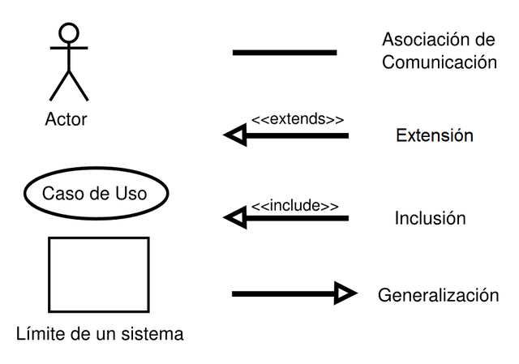
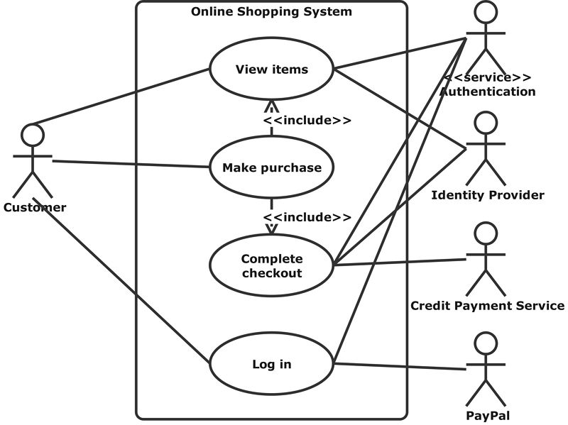
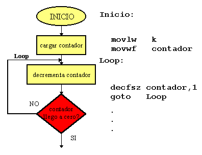
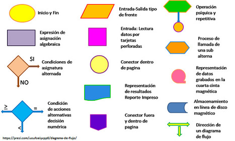

¿Qué son los Casos de Uso?
Los casos de uso son una técnica utilizada en el desarrollo de software para describir cómo los usuarios interactúan con un sistema.
Estos se utilizan para identificar los requisitos funcionales del sistema y para ayudar a entender cómo debe comportarse
Un caso de uso es la descripción de una acción o actividad. Un diagrama de caso de uso es una descripción de las actividades que deberá realizar alguien o algo para llevar a cabo algún proceso. Los personajes o entidades que participarán en un diagrama de caso de uso se denominan actores..
Componentes de un Caso de Uso
Un caso de uso típico incluye:
- Actor: El usuario o sistema externo que interactúa con el sistema.
- Escenario: La secuencia de pasos que describen la interacción.
- Objetivo: Lo que el actor espera lograr.
Ejemplo de un Caso de Uso
Por ejemplo, en un sistema de biblioteca, un caso de uso podría describir cómo un usuario busca y reserva un libro.


Importancia de los Casos de Uso
Los casos de uso son importantes porque ayudan a:
- Clarificar los requisitos del sistema.
- Facilitar la comunicación entre desarrolladores y partes interesadas.
- Proveer una base para la prueba del sistema.
En conclusión, entender y aplicar casos de uso es esencial para el desarrollo exitoso de software.
Ciclos Repetitivos
Los ciclos repetitivos, también conocidos como bucles, son estructuras de control que permiten ejecutar un bloque de código varias veces. Son fundamentales en la programación, ya que facilitan la automatización de tareas repetitivas Un bucle (loop) o ciclo repetitivo es una estructura de control que te permite realizar una o varias instrucciones mientras una condición sea verdadera. Todo bucle necesita un valor inicial y un incremento. El incremento es necesario para que no exista un ciclo infinito..
Tipos de Ciclos Repetitivos
Existen varios tipos de ciclos, entre los más comunes se encuentran:
- Ciclo
for: Se utiliza cuando se conoce de antemano cuántas veces se debe repetir el bloque de código.
- Ciclo
while: Se utiliza cuando no se sabe cuántas veces se debe repetir el bloque de código, y se repite mientras se cumpla una condición.
Ejemplo de Ciclo for
for (int i = 0; i < 5; i++) {
console.log(i);
}
Ejemplo de Ciclo while
let i = 0;
while (i < 5) {
console.log(i);
i++;
}


¿Qué son los Algoritmos?
Un algoritmo es un conjunto de instrucciones o pasos bien definidos que se siguen para resolver un problema o realizar una tarea específica. Los algoritmos son fundamentales en la programación y se utilizan para desarrollar software, procesar datos y realizar cálculos está formado por una serie de instrucciones que realizan una serie de procesos con el objetivo de resolver un problema. A través de algoritmos, los programadores pueden dar respuesta a cualquier problema antes de modificarlo en el lenguaje elegido..
Características de los Algoritmos
Los algoritmos deben cumplir con ciertas características para ser efectivos:
- Definición Precisa: Cada paso del algoritmo debe estar claramente definido.
- Finito: Debe tener un número finito de pasos.
- Entrada y Salida: Debe tener entradas específicas y producir salidas claras.
- Generalidad: Debe ser aplicable a una clase de problemas, no solo a uno específico.
Ejemplo de Algoritmo
A continuación, se presenta un ejemplo simple de un algoritmo para sumar dos números:
1. Ingresar el primer número.
2. Ingresar el segundo número.
3. Sumar ambos números.
4. Mostrar el resultado.


Importancia de los Algoritmos
Los algoritmos son esenciales en la informática porque:
- Proporcionan una solución sistemática a los problemas.
- Facilitan la automatización de tareas.
- Mejoran la eficiencia y la efectividad de los procesos.
- Son la base para el desarrollo de programas y aplicaciones.
En resumen, entender los algoritmos es crucial para cualquier persona que desee incursionar en el mundo de la programación y la informática.